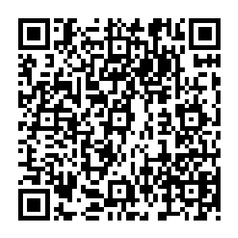
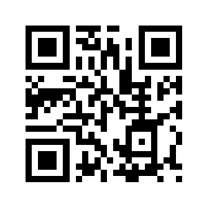
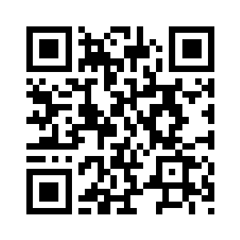
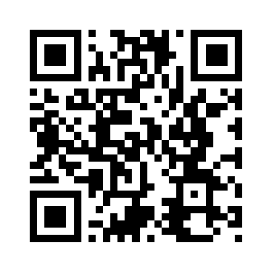

M.E.T.A.S.Misiones Educativas · metas.policastsapien.com
⏱️ Kit de Capacitación · Sesión 2
La evaluación que se corrige sola · examen impreso + ZipGrade · 60 minutos
Esta sesión demuestra una sola cosa: M.E.T.A.S es un agente que trabaja
para ti. Diseña el examen, imprime 30 versiones distintas para que nadie copie, te entrega la
pauta ya hecha… y con ZipGrade tu teléfono corrige cada hoja en segundos. Tú solo
enseñas: lo demás lo hace tu agente.
💰 Lo que cuesta UN examen (grupo de 35 alumnos)
| Tarea | A mano ✍️ | Con tu agente 🤖 |
|---|
| Diseñar y escribir el examen | ≈ 2 horas | 2 minutos (eliges misión y Forma) |
| Versiones anti-copia | casi imposible | 30 formas del mismo examen, incluidas |
| Hacer la pauta de respuestas | ≈ 30 minutos | 0: nace hecha, con la clave ZipGrade |
| Revisar 35 exámenes | ≈ 3 horas y media | ≈ 3 minutos (5 segundos por hoja) |
| Pasar las notas al registro | ≈ 30 minutos | unos minutos, sin sumar a mano |
| TOTAL por examen | ≈ 6 horas y media | ≈ 15 minutos |
≈ 100 horas al año
Con 4 materias básicas × 4 parciales (16 exámenes), tu agente te devuelve
más de DOS SEMANAS de trabajo cada año. Dos semanas para planificar, descansar…
o para tu familia. Y la cuenta crece: programación, robótica e inglés también
traen sus dos pruebas con 30 formas y su pauta hecha.
📋 Guión de la sesión (para quien conduce)
| Tiempo | Momento | Qué pasa |
|---|
| 0–10 min | 💸 El costo oculto | Dinámica en pizarra: cada maestro dice cuántas horas le toma UN examen (hacer + revisar + pasar notas). Se suman. Ese número es el enemigo de hoy. |
| 10–20 min | 🖨️ Nace el examen | Todos abren la misión Ángulos y Bisectriz (Paso 1) y generan SU examen con SU número de Forma. En 2 minutos cada quien tiene un examen distinto y su pauta. |
| 20–30 min | 📲 ZipGrade | Descargan ZipGrade (Paso 2), crean su cuenta gratis y copian la clave de la pauta (Paso 3). |
| 30–45 min | 🎬 LA MUESTRA | Se reparte la hoja de respuestas personalizada. Todos responden el examen de Bisectriz como alumnos… y el facilitador escanea en vivo: nota en pantalla en segundos. Luego cada quien escanea la suya. |
| 45–55 min | 📊 Cerrar el ciclo | Del escaneo a las notas: Registro de clase y Notas SACE → boleta (Paso 5). El agente diseña, corrige y archiva. |
| 55–60 min | ✅ Cierre | Checklist final (Paso 7). Nadie se va sin haber escaneado una hoja. |
🎒 El facilitador lleva impresos: el examen de la misión «Ángulos y Bisectriz»
(una Forma), las hojas de respuestas ZipGrade personalizadas (una por participante) y la
pauta con la clave. Los participantes solo traen su teléfono.
1🖨️ Genera el examen en 2 minutos
- Escanea el QR: se abre la misión «Ángulos y Bisectriz».
- Baja hasta la sección de evaluación imprimible.
- Elige tu Forma (1 a 30) y el parcial → Imprimir.
- 🔁 30 formas del mismo examen: mismas preguntas de fondo, distinto orden:
nadie puede copiar del compañero.
- 🎯 La Forma es exacta: la Forma 7 regenera SIEMPRE el mismo examen y la misma
pauta. Si pierdes la hoja, la vuelves a imprimir idéntica.
- 🎨 Cada materia sale con su color oficial (matemáticas azul) y el encabezado con el parcial.

📷 Misión «Ángulos y Bisectriz»
2📲 Descarga ZipGrade: tu escáner de exámenes
- Escanea el QR o busca «ZipGrade» en la Play Store / App Store.
- Instala la app y crea tu cuenta gratis (correo y contraseña).
- La cuenta gratuita permite 100 escaneos al mes, de sobra para empezar;
el plan completo cuesta unos dólares al año.
📱 ZipGrade convierte la cámara de tu teléfono en una
máquina calificadora: apuntas a la hoja de respuestas y la nota aparece al instante,
con estadística de qué pregunta falló más el grupo.

📷 zipgrade.com
(o búscala en tu tienda de apps)
3🔑 La pauta que nace hecha
Al imprimir el examen, M.E.T.A.S imprime también la pauta del docente, y ahí viene
la clave ZipGrade ya escrita (A, C, B, D…) en el orden exacto de tu Forma.
En ZipGrade: New Quiz → Edit Key → marca las letras que dice tu pauta.
Listo: tu agente ya sabe corregir ese examen.
- Cada Forma tiene SU clave: usa la pauta de la Forma que imprimiste.
- La pauta también sirve para revisar a mano un caso especial, con el desarrollo completo.
4🎬 La muestra en vivo: todos son alumnos por 10 minutos
- Recibe tu hoja de respuestas ZipGrade personalizada y el examen de Bisectriz.
- Respóndelo de verdad, como si fueras tu alumno (¡rellena bien los círculos!).
- El facilitador escanea las primeras hojas frente a todos: la nota sale en segundos.
- Ahora tú: abre ZipGrade → Scan Papers → apunta la cámara a tu hoja. Esa
sensación de ver la nota al instante… es la que tendrás cada parcial.
💡 Tip del aula real: mientras los alumnos terminan el examen, tú vas escaneando
las hojas de los que entregan. Cuando suena el timbre, ya está todo corregido.
5📊 Cerrar el ciclo: del escaneo a la boleta
- ZipGrade te muestra la lista de notas del grupo (y qué pregunta falló más: oro para reenseñar).
- Pasa las notas a M.E.T.A.S: ☰ → Registro de clase (diario) o
Zona Docente → Mi aula → Notas SACE (parcial), con auto-avance: escribes y el
cursor salta solo.
- Desde ahí, tu agente arma la boleta oficial con gráfico de evolución, análisis
por materia y consejo para cada familia. Tú no calculas nada.

📷 Plataforma M.E.T.A.S
6🆘 ¿Dudas después de hoy?
- Guías ilustradas: escanea el QR de la derecha.
- Buzón directo al creador: en la app, ☰ → Ajustes → «Escríbele al creador del proyecto».

📷 Guías y manuales
7✅ Salgo de esta capacitación con…
- Generé el examen de Bisectriz con MI número de Forma y vi mi pauta con la clave.
- ZipGrade instalado y con mi cuenta creada.
- Respondí una hoja y la escaneé: vi mi nota en segundos.
- Sé copiar la clave de la pauta en ZipGrade (New Quiz → Edit Key).
- Sé dónde pasar las notas (Registro de clase / Notas SACE) para que salga la boleta sola.
- Sé cuántas horas me devuelve mi agente cada año, y qué haré con ellas.
⏱️ Kit de Capacitación M.E.T.A.S · Sesión 2 · Proyecto Educativo policastsapien.com
Se imprime una hoja por participante · versión julio 2026